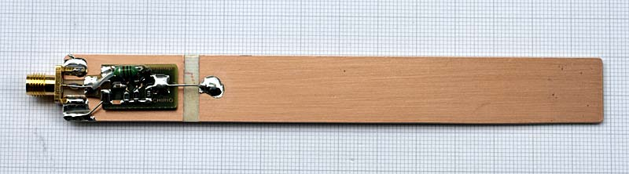
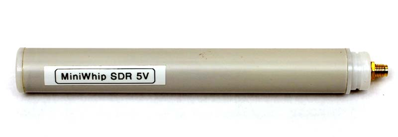
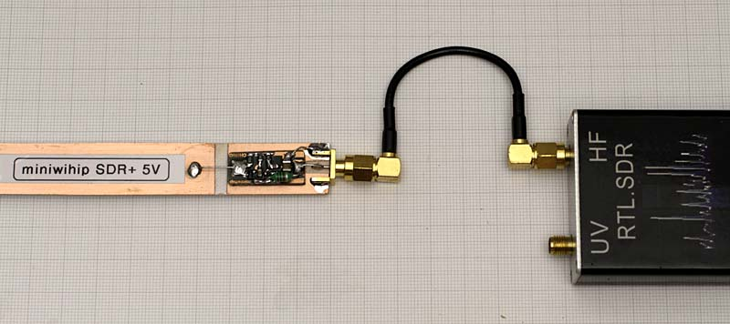
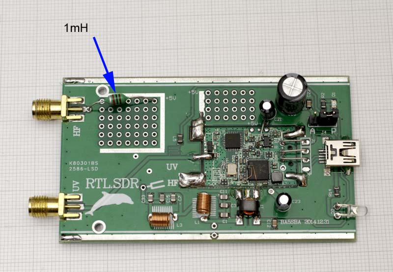
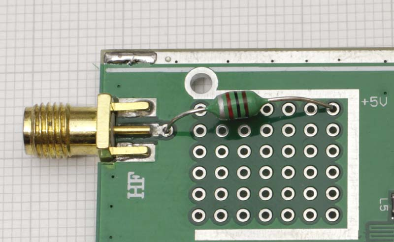
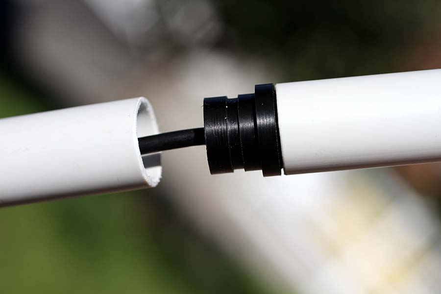

Radio & antenne
Chirio Mini Whip SDR+ 5V
Antenna attiva per frequenze 10 kHz - 30 MHz - come modificare RTL-SDR
Luglio 2018
Questa MiniWhip è l'evoluzione della SDR in quanto viene eliminata l'alimentazione esterna a batteria e si usa direttamente il 5V disponibile sull'ingresso di molti ricevitori SDR.
L'alimentazione arriva all'antenna tramite il cavo coassiale segnale.
Le caratteristiche sono quelle della MiniWhip SR per scanner portatili, ma in questa configurazione l'antenna può essere montata all'esterno usando un tubo PVC da 20mm come protezione e come supporto.
Il tubo può essere facilmente posizionato su balconi, terrazzi e anche solo fuori di una finestra. Molto adatta questa configurazione per montaggio su camper e perché no anche fuori di una tenda.

MiniWhip SDR+ 5V versione PCB

MiniWhip SDR+ 5V versione base fissa (tubo PVC 20mm)
Caratteristiche
- Con 5V l'assorbimento è di 10mA circa.
- Banda passante da 10 kHz a 30 MHz (-30dB), a -80dB si riceve ancora fino a 150 MHz
- Impedenza uscita è di 200 ohm adatta un po’ per tutti gli ingressi ricevitore.
- Versione PCB dimensioni 17x180mm adatta per prove
- Versione base fissa lunghezza 150mm sigillata dentro tubo PVC 20mm.
- Accessori disponibili: power feeder 5V ingresso batteria 9V, prolunga 10mt con cavo RG174/U connettori SMA-M/SMA-M
Segnale presente sulla Chirio Mini-Whip, si vedono tutte le frequenze da 0 a 20 MHz. Il segnale è più forte ed escono molte emittenti non ascoltabili con una antenna convenzionale filare. Molto presenti tutti i segnali fino a poche decine di kHz. L'antenna è stata montata esterno casa su un palo in PVC da 3mt.
{kind=link}

- La semplice connessione tra la MiniWhip SDR+ e l'ingresso del ricevitore SDR, in questo caso si collega sull'ingresso HF, con la RTL.SDR per avere il 5V sull'ingresso HF è necessario fare le modifiche indicate in seguito.
- In questa configurazione, non serve la connessione a terra per togliere i disturbi in quanto non abbiamo il cavo di alimentazione separato.
- La foto è solo dimostrativa della semplice connessione, l'antenna MiniWhip va montata esterna lontana dall'SDR.
- -------------------------------------------
Come modificare l'economico RTL-SDR per avere alimentazione sul connettore HF

- Per portare alimentazione all'ingresso HF bisogna aprire il contenitore della RTL.SDR svitando le 4 viti ed estrarre il circuito.
- Nella zona ingressi è già prevista una foratura per prove con la piazzola con i 5V

- Occorre saldare sul circuito nel punto indicato un induttore da 1mH così da fare ponticello per l'alimentazione e blocco per la RF verso l'alimentazione stessa.
- Bisogna inoltre tagliare la pista sotto a proseguire dopo il SMA HF e inserire un condensatore da 100nF ceramico, altrimenti ci si trova nella condizione di corto circuito per la DC per via del trasformatore presente più avanti sul PCB.
- Per attivare il 5V basta spostare il ponticello a desta nella posizione (A) attenzione che si porta anche alimentazione sull'ingresso UV pertanto togliere eventuali connettori ad altre antenne.
- Verificare con multimetro la presenza del 5V sulla presa SMA per HF.
- Chiudere il tutto e collegare l'antenna MiniWhip SDR+.

- Il gruppo MiniWhip SDR si può facilmente incastrare su un tubo PVC da 20mm, eventualmente un po' di colla silicone permette di fermare e sigillare il tutto.
- L'antenna deve essere sempre posizionata all'esterno, lontano da ostacoli metallici, il tubo/palo PVC può anche essere posizionato in orizzontale quando non è possibile la verticale, importante almeno 2 metri lontano dalla parte metallica del balcone terrazzo.
Consigli per ascolto: stazioni, bande, frequenze, orari e stagioni.
- Associazione Italiana Radioascolto http://www.air-radio.it/
- International Shortwave Broadcast Bands http://www.hamuniverse.com/shortwavebandfreqs.html
- RADIO NEW ZEALAND INTERNATIONAL http://www.rnzi.com/pages/listen.php
- Manuali e schemi per radioamatori, CB e BCL http://www.radiomanual.eu/
© Roberto Chirio: all rights reserved.